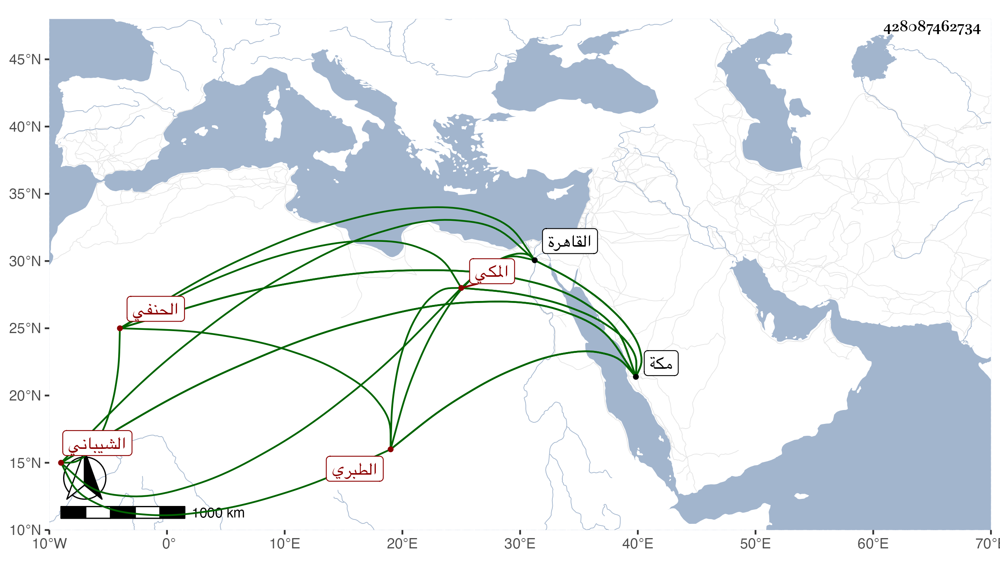

0902Sakhawi.DawLamic.ITO20230111-ara1.EIS1600.428087462734
Biography ID: 428087462734
203
جار الله بن صالح بن أبي المنصور أحمد بن عبد الكريم بن أبي المعالي يحيى بن عبد الرحمن بن علي بن الحسين بن محمد بن شيبة بن اياد بن عمرو بن العلاء بن مسعود جلال الدين الشيباني الطبري الاصل المكي الحنفي والد أحمد وعلي ومحمد . سمع من خليل المالكي والعز بن جماعة وابن بنت أبي سعد والشهاب الهكاري والنور الهمداني والموفق الحنبلي والكمال ابن حبيب وابن عبد المعطي في آخرين ، وأجاز له إبراهيم بن محمد بن يونس بن القواس والشهاب أحمد بن محمد بن عمر زغلش ومحمد بن إبراهيم بن أزبك وخلق ، وحدث سمع منه الفضلاء رغبة في اسمه وممن سمع منه التقي الفاسي ، وذكره في تاريخ مكة وشيخنا قرأ عليه أحاديث من الترمذي بمدينة ينبع ، وقال في معجمه كان خيرا عاقلا ، زاد غيره أحد المنزلين بدرس يلبغا بمكة ، تردد إلى القاهرة مرارا وأدركه أجله بها في آخر سنة خمس عشرة بخانقاه سعيد السعداء ودفن بمقبرة صوفيتها وقد بلغ السبعين ، وهو القائل فيه الصدر بن الادمي ما اشتهر مما سيأتي في ترجمته وذكره المقريزي في عقوده بزيادة محمد في نسبه بعد صالح .
